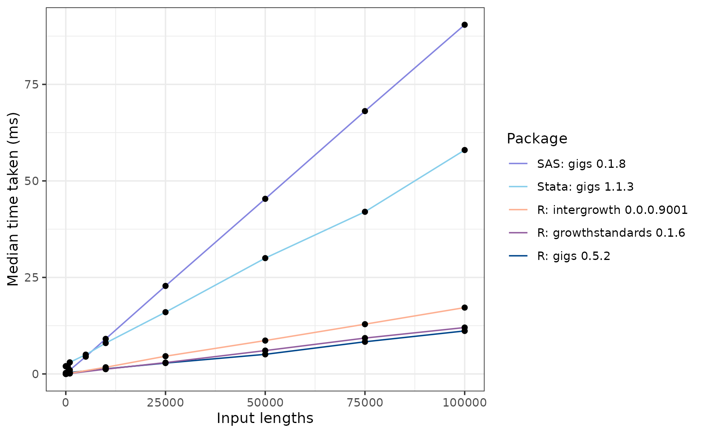

Benchmarking gigs against other software packages
Source:vignettes/articles/benchmarking.Rmd
benchmarking.RmdRationale
This short article describes the performance of gigs relative to a non-exhaustive group of R and non-R packages which implement international growth standards which are also found in gigs.
| Package name | Language | On CRAN? |
|---|---|---|
| gigs | R | No |
| anthro | R | Yes |
| AGD | R | Yes |
| childsds | R | Yes |
| sitar | R | Yes |
| zscorer | R | Yes |
| ki-tools/growthstandards | R | No |
| nutriverse/intergrowth | R | No |
| gigs (Stata) | Stata | No |
| zanthro (Stata) | Stata | No |
| gigs (SAS) | SAS | No |
Thus far, there is no comprehensive benchmark comparing these different packages. This short article will compare the speed of each package from 1 to 100000 inputs, checking how fast each package can convert weight values to z-scores in different growth standards.
We performed these benchmarks on R version 4.3.3, using a Windows 10 system with a Ryzen 7 3700X processor and 16GB of DDR4 RAM. The Stata benchmarks were run in Stata 18.0 (revision 16 Oct 2024) on the same system, using the benchmark package for Stata. The SAS benchmarks were also performed on this system, using SAS 9.4 (9.04.01M6P111518), in a custom benchmarking process detailed in a code block at the bottom of this article.
Other R packages can be used to analyse growth data with international standards, but have limitations which are not present in gigs. There are also software packages external to R which implement these standards. The table below describes these packages, and to what extent they have implemented functions that let users convert anthropometric measurements to z-scores/centiles in each set of standards implemented in gigs - the WHO Child Growth standards, INTERGROWTH-21st Newborn Size standards (including Very Preterm), and the INTERGROWTH-21st Postnatal Growth standards for preterm infants. No other packages (except gigs for Stata) includes the extended versions of the INTERGROWTH-21st Newborn Size standards (incl. Very Preterm).
A tick (✅) indicates that all possible standards are included in a package, a red cross (❌) indicates that these standards are completely missing, and a warning sign (⚠️) indicates that some of these standards are implemented but not others.
| Software | Platform | WHO (0-5 years) | IG-21st NBS | IG-21st PNG | IG-21st Fetal | Functionality |
|---|---|---|---|---|---|---|
| gigs | R | ✅ | ✅ | ✅ | ✅ | Values ↔︎ z-scores/centiles |
| anthro | R | ✅ | ❌ | ❌ | ❌ | Values → z-scores |
| AGD | R | ✅ | ❌ | ❌ | ❌ | Values ↔︎ z-scores |
| childsds | R | ✅ | ❌ | ❌ | ❌ | Values → z-scores/centiles |
| ki-tools/growthstandards | R | ✅ | ✅ | ⚠️ | ⚠️ | Values ↔︎ z-scores/centiles |
| nutriverse/intergrowth | R | ❌ | ❌ | ❌ | ⚠️ | Values → z-scores/centiles |
| sitar | R | ✅ | ❌ | ❌ | ❌ | Values ↔︎ z-scores/centiles |
| zscorer | R | ✅ | ❌ | ❌ | ❌ | Values → z-scores/centiles |
| gigs (Stata) | Stata | ✅ | ✅ | ✅ | ✅ | Values ↔︎ z-scores/centiles |
| zanthro (Stata) | Stata | ✅ | ❌ | ❌ | ❌ | Values → z-scores/centiles |
| gigs (SAS) | SAS | ✅ | ✅ | ✅ | ✅ | Values ↔︎ z-scores/centiles |
Shared benchmark code
In this vignette, we perform benchmark performance in each a growth standard from each set of growth standards implemented in gigs, excluding the extended INTERGROWTH-21st Newborn Size standards. These are the:
- WHO Child Growth Standards (0-5 years)
- INTERGROWTH-21st Newborn Size standards
- INTERGROWTH-21st Postnatal Growth standards
- INTERGROWTH-21st Fetal standards
The benchmarks utilise pre-generated datasets for growth standard.
The z-scores, x variable and sexes for each row are
generated (pseudo)randomly. Because the gigs test suite
validates its functions against published growth curve data from the WHO
and the INTERGROWTH-21st Project, we use
gigs to generate expected measurements for each
observation. This dataset can then be used to compare speeds for each
package. These datasets are generated with the following function:
benchmark_dataset <- function(n, family, acronym) {
data <- get(family, envir = asNamespace("gigs"))
if (family == "ig_fet") {
xvars <- data[[acronym]][[1]][[1]]
} else {
xvars <- data[[acronym]][[1]][[1]][[1]]
}
withr::with_seed(seed = 154237890, code = {
# Random z-scores around 0
z <- rnorm(n = n)
})
withr::with_seed(seed = 154237890, code = {
# X variables are non-discrete but within bounds of the desired acronym
x <- sample(xvars, size = n, replace = TRUE)
x_jitter <- c(runif(n = 5, min = -1, max = 1), 0)
x <- x + sample(x_jitter, size = n, replace = TRUE)
x <- pmax(pmin(x, max(xvars)), min(xvars))
# Sexes randomly sampled from male and female
sex <- sample(c("M", "F"), size = n, replace = TRUE)
}
)
gigs_fn <- get("zscore2value", envir = asNamespace("gigs"))
out <- if (family != "ig_fet") {
list(z = z, x = x, sex = sex, family = family, acronym = acronym)
} else {
list(z = z, x = x, family = family, acronym = acronym)
}
out$y <- do.call(what = gigs_fn, args = out)
if (family == "ig_fet") {
out$sex <- NA
}
as.data.frame(out, stringsAsFactors = FALSE)
}We’re using the bench package throughout this
vignette, specifically the bench::press() function, which
lets us compare function scaling by iterating through increasing numbers
of observations.
WHO Growth Standards
The World Health Organisation (WHO) Child Growth Standards describe postnatal growth in multiple anthropometric measures from birth (0 days) to up to 1856 days for specific standards (e.g. weight-for-age), and are also implemented in a variety of other packages.
Set up benchmark dataset
# Generate 100,000-row dataset
ac_who_gs <- "wfa"
ds_who_gs <- benchmark_dataset(n = 100000,
family = "who_gs",
acronym = ac_who_gs)The first 10 rows of this dataset look like this:
#> z x sex family acronym y
#> 1 0.17839158 542.3057 M who_gs wfa 11.119034
#> 2 1.08068286 436.8223 F who_gs wfa 10.829792
#> 3 -0.70269294 1070.1117 F who_gs wfa 12.524220
#> 4 0.09501730 6.0000 M who_gs wfa 3.502423
#> 5 -0.44829268 1465.8223 F who_gs wfa 15.135840
#> 6 -0.35747447 1527.0000 M who_gs wfa 15.958518
#> 7 1.16612927 431.3057 M who_gs wfa 11.512052
#> 8 -0.08746512 653.3057 F who_gs wfa 10.832094
#> 9 -0.47685189 948.1117 M who_gs wfa 12.765554
#> 10 0.80015420 581.3677 M who_gs wfa 12.206283Timing
R
temp_bp_who_gs_most <- bench::press(
input_len = c(1, 1000, 10000, seq(25000, 100000, 25000)),
{
selector <- seq_len(input_len)
weight_kg <- ds_who_gs$y[selector]
age_days <- ds_who_gs$x[selector]
acronym <- ds_who_gs$acronym[selector]
sex <- ds_who_gs$sex[selector]
sex_gs <- ifelse(sex == "M", "Male", "Female")
age_years <- age_days / 365.25
bm_who_gs <- bench::mark(
check = FALSE, filter_gc = TRUE, time_unit = "ms", min_iterations = 30,
gigs = gigs::value2zscore(weight_kg, age_days, sex,
family = "who_gs", acronym = ac_who_gs),
anthro = anthro::anthro_zscores(weight = weight_kg,
age = age_days,
sex = sex)$zwei,
AGD = AGD::y2z(y = weight_kg,
x = age_days,
sex = sex,
ref = AGD::who.wgt,
tail.adjust = TRUE),
childsds = childsds::sds(value = weight_kg,
age = age_years,
sex = sex,
male = "M",
female = "F",
item = "weight",
ref = childsds::who.ref),
gs = growthstandards::who_value2zscore(y = weight_kg, x = age_days,
y_var = "wtkg", x_var = "agedays",
sex = sex_gs),
sitar = sitar::LMS2z(y = weight_kg, x = age_years, sex = sex,
measure = "wt", ref = sitar::who06)
)
})
temp_bp_who_gs_zscorer <- bench::press(
input_len = c(1, 1000, 5000, 10000, 15000),
{
selector <- seq_len(input_len)
weight_kg <- ds_who_gs$y[selector]
age_days <- ds_who_gs$x[selector]
sex <- ds_who_gs$sex[selector]
df_zscorer <- data.frame(
weight = weight_kg, age = age_days,
sex = ifelse(sex == "M", 1, 2)
)
bm_who_gs <- bench::mark(
check = FALSE, filter_gc = TRUE, time_unit = "ms", max_iterations = 5,
zscorer = zscorer::addWGSR(
df_zscorer, sex = "sex", firstPart = "weight", secondPart = "age",
index = "wfa"
)
)
})
bp_who_gs_r <- dplyr::bind_rows(temp_bp_who_gs_most, temp_bp_who_gs_zscorer) |>
dplyr::mutate(desc = attr(expression, which = "description")) |>
dplyr::select(input_len, median, desc)Stata
# Save .dta file equivalent of benchmarking table. This can be used to benchmark
# Stata packages.
haven::write_dta(
data = ds_who_gs,
path = file.path("exclude", "statabench", "bench_ds_who_gs.dta")
)In Stata, the commands are run inside a do-file which utilises the benchmark
package for Stata. This code essentially does the same as
bench::press(), but for the packages we’re testing in
Stata.
// This is Stata code
foreach i in 1 10 100 500 1000 5000 10000 25000 50000 75000 100000 {
use "bench_ds_who_gs.dta", clear
qui drop if _n > `i'
di "For who_gs gigs_stata - Number of inputs: `i'"
bench, reps(25) restore last: ///
qui egen double z_gigs = who_gs(y, "wfa", "v2z"), ///
xvar(x) sex(sex) sexcode(m=M, f=F)
}
foreach i in 1 10 100 500 1000 5000 10000 25000 50000 75000 100000 {
use "bench_ds_who_gs.dta", clear
qui drop if _n > `i'
di "For who_gs zanthro_stata - Number of inputs: `i'"
bench, reps(25) restore last: ///
qui egen z_anthro = zanthro(y, wa, WHO), xvar(x) gender(sex) ///
gencode(male=M, female=F) ageunit(day)
}SAS
# Save .txt file equivalent of benchmarking table. This can be used to benchmark
# SAS package.
write.table(ds_who_gs,
file = file.path("exclude", "sasbench", "bench_ds_who_gs.txt"),
sep = ",",
row.names = FALSE,
col.names = FALSE,
quote = FALSE)In SAS, the commands are run inside a script described at the bottom of this article. This code essentially does
the same as bench::press(), but for the SAS implementation
of gigs.
Package comparisons: timing
On the whole, zscorer is by far the slowest R
package, taking around 13.042 seconds to process 15,000 inputs. We
couldn’t get it to process 100,000 inputs in good time. Looking at the
source code, this is because zscorer::addWGSR() hasn’t been
vectorised.
Next slowest is anthro, which takes 2.178 seconds to
process 100,000 inputs. This slowdown arises from
anthro computing results in every WHO Child Growth
standard each time anthro::anthro_zscores() is called, but
also due to a slower implementation of the WHO LMS procedure than the
other R packages.
Next slowest is the Stata package zanthro, which takes around 1.063 seconds to compute results in a single WHO standard. About 4 times faster than zanthro is gigs for Stata, which scales more efficiently than zanthro and takes around 0.351 seconds to convert 100,000 measurements to z-scores.
Focussing now on the faster implementations reveals some interesting patterns:
The sitar package is far and away the fastest here, taking ~46 ms to process 100,000 inputs. This is because it uses the monthly LMS coefficients to calculate its z-scores. Whilst this is quicker, it does induce some imprecision when compared to the other packages.
In R, the next fastest was the growthstandards package at ~89 ms for 100,000 inputs, followed by gigs (~101 ms), AGD (~113 ms, and lastly childsds (~125 ms).
If you’re a SAS user, you’ll find gigs for SAS slower than its R equivalent, but still much faster than Stata at ~186 milliseconds.
Interestingly, AGD starts out much slower than the other ‘fast’ R packages, but may scale more efficiently as you reach larger sets of inputs. Additionally, gigs is faster than growthstandards up to ~34,000 inputs but ends up slower at 100,000 inputs. This may be due to the input checks performed in gigs, which scale worse than the conversion code itself.
Package comparisons: numerical consistency
In our testing of the WHO standards, we found that the tested packages mostly agreed with each other when provided the same inputs, except for childsds and sitar.
For childsds, this is because the WHO Child Growth
standards constrain z-scores in the outer tails (i.e. past 3 z-scores),
as their data was more sparse for these extreme values. More information
on this constraining procedure can be found in the reports referenced in
the gigs::who_gs documentation. It appears that
childsds does not perform this constraining procedure,
so conversions where abs(z_score) > 3 are computed
incorrectly:
discrepancies_who_gs <- data.frame(z = c(-3.03, -2.97, 2.97, 3.03),
age_days = 0,
sex = "M") |>
dplyr::mutate(
weight_kg = gigs::zscore2value(z, age_days, sex, "who_gs", "wfa"),
# GIGS z-score
z_gigs = gigs::value2zscore(weight_kg, age_days, sex, "who_gs", "wfa"),
# growthstandards z-score
z_growthstandards = growthstandards::who_wtkg2zscore(
age_days, weight_kg, "Male"
),
# childsds z-score
z_childsds = childsds::sds(
value = weight_kg, age = age_days / 365.25,
sex = sex, male = "M", female = "F",
item = "weight", ref = childsds::who.ref
)
)#> z age_days sex weight_kg z_gigs z_growthstandards z_childsds
#> 1 -3.03 0 M 2.068938 -3.03 -3.03 -3.031770
#> 2 -2.97 0 M 2.091082 -2.97 -2.97 -2.970000
#> 3 2.97 0 M 5.011546 2.97 2.97 2.970000
#> 4 3.03 0 M 5.048978 3.03 3.03 3.028744When we look at these z-scores, you can see that both
growthstandards and gigs correctly
apply the constraining procedure; childsds does not.
AGD constrains z-scores if the tail.adjust
option in AGD::y2z() is specified, and from looking at the
anthro source code, they also apply the constraining
procedure.
| z | age_days | sex | weight_kg | z_gigs | z_growthstandards | z_childsds |
|---|---|---|---|---|---|---|
| -3.03 | 0 | M | 2.068938 | -3.03 | -3.03 | -3.031770 |
| -2.97 | 0 | M | 2.091082 | -2.97 | -2.97 | -2.970000 |
| 2.97 | 0 | M | 5.011546 | 2.97 | 2.97 | 2.970000 |
| 3.03 | 0 | M | 5.048978 | 3.03 | 3.03 | 3.028744 |
Discrepancies between sitar and gigs arise from sitar relying on monthly LMS values for the WHO Growth Standards, instead of the daily tables. This means for the same day, sitar and gigs will use slightly different lambda/mu/sigma values, and so compute different z-scores for the same measurements.
INTERGROWTH-21st Newborn Size standards
The INTERGROWTH-21st Newborn Size standards are
implemented in gigs for R and Stata, and in the
growthstandards package for R. Let’s make a new
dataset, ds_ig_nbs, which we will use to benchmark these
functions:
ac_ig_nbs <- "wfga"
ds_ig_nbs <- benchmark_dataset(n = 100000,
family = "ig_nbs",
acronym = ac_ig_nbs)The first 10 rows of this dataset look like this:
ds_ig_nbs[1:10, ]#> z x sex family acronym y
#> 1 0.17839158 199.6505 M ig_nbs wfga 1.1849768
#> 2 1.08068286 213.1492 M ig_nbs wfga 1.7851534
#> 3 -0.70269294 174.0968 F ig_nbs wfga 0.5907529
#> 4 0.09501730 236.1492 F ig_nbs wfga 2.0900137
#> 5 -0.44829268 232.1492 M ig_nbs wfga 1.8175155
#> 6 -0.35747447 216.7849 M ig_nbs wfga 1.4387923
#> 7 1.16612927 231.6505 F ig_nbs wfga 2.3235513
#> 8 -0.08746512 188.6505 M ig_nbs wfga 0.9236040
#> 9 -0.47685189 188.7849 F ig_nbs wfga 0.8110397
#> 10 0.80015420 276.7849 F ig_nbs wfga 3.5293549Timing
R
bp_ig_nbs_r <- bench::press(
input_len = c(1, 1000, 10000, seq(25000, 100000, 25000)),
{
p <- pnorm(ds_ig_nbs$z[1:input_len])
weight_kg <- ds_ig_nbs$y[1:input_len]
gest_days <- ds_ig_nbs$x[1:input_len]
acronym <- ds_ig_nbs$acronym[1:input_len]
sex <- ds_ig_nbs$sex[1:input_len]
sex_gs <- ifelse(sex == "M", "Male", "Female")
bench::mark(
check = FALSE, filter_gc = TRUE, time_unit = "ms", min_iterations = 50,
gigs = gigs::value2centile(y =weight_kg, x = gest_days, sex = sex,
family = "ig_nbs", acronym = ac_ig_nbs),
gs = growthstandards::igb_value2centile(val = weight_kg,
gagebrth = gest_days,
sex = sex_gs, var = "wtkg")
)
}) |>
dplyr::mutate(desc = attr(expression, which = "description")) |>
dplyr::select(input_len, median, desc)Stata
# Save .dta file equivalent of benchmarking table. This can be used to benchmark
# Stata packages.
haven::write_dta(
data = ds_ig_nbs,
path = file.path("exclude", "statabench", "bench_ds_ig_nbs.dta")
)We can then benchmark the speed of the Stata command:
// This is Stata code
foreach i in 1 10 100 500 1000 5000 10000 25000 50000 75000 100000 {
use "bench_ds_ig_nbs.dta", clear
qui drop if _n > `i'
di "For ig_nbs gigs_stata - Number of inputs: `i'"
bench, reps(25) restore last: ///
qui egen double z_gigs = ig_nbs(y, "wfga", "v2z"), ///
gest_days(gest_days) sex(sex) sexcode(m=M, f=F)
}SAS
# Save .txt file equivalent of benchmarking table. This can be used to benchmark
# SAS package.
write.table(ds_ig_nbs,
file = file.path("exclude", "sasbench", "bench_ds_ig_nbs.txt"),
sep = ",",
row.names = FALSE,
col.names = FALSE,
quote = FALSE)In SAS, the commands are run inside a script described at the bottom of this article. This code essentially does
the same as bench::press(), but for the SAS implementation
of gigs.
Package comparisons: timing
For this set of growth standards, the Stata implementation for GIGS is the slowest at ~382 ms. Next is gigs for SAS, which is much faster at ~187 ms. The growthstandards and gigs packages are the fastest at ~70 ms and ~79 ms, respectively.
Package comparisons: numerical consistency
In our testing of the INTERGROWTH-21st Newborn Size
standards, we found that the implementation in
growthstandards does not perform coefficient
interpolation for the INTERGROWTH-21st Newborn Size standards
which utilise mu/sigma/nu/tau coefficients. Instead,
growthstandards uses round() to round
non-integer gestational ages to the nearest value, then gets
mu/sigma/nu/tau coefficients for this rounded GA. This leads a
smaller-scale version of the z-scoring errors found by Kiger et
al. (2016) when not interpolating LMS coefficients in the WHO
standards.
weight_kg <- 3
gestage <- seq(274, 278, 0.5)
gigs <- gigs::value2centile(y = weight_kg, x = gestage, sex = "M",
family = "ig_nbs", acronym = "wfga")
gs <- growthstandards::igb_value2centile(val = weight_kg, gagebrth = gestage,
sex = "Male", var = "wtkg")
waldo::compare(gigs, gs / 100, x_arg = "gigs", y_arg = "growthstandards")#> [1] " `gigs`: \033[90m0.254\033[39m \033[32m0.245\033[39m \033[90m0.236\033[39m \033[32m0.228\033[39m \033[90m0.220\033[39m \033[32m0.212\033[39m \033[90m0.204\033[39m \033[32m0.197\033[39m \033[90m0.189\033[39m\n`growthstandards`: \033[90m0.254\033[39m \033[32m0.254\033[39m \033[90m0.236\033[39m \033[32m0.220\033[39m \033[90m0.220\033[39m \033[32m0.220\033[39m \033[90m0.204\033[39m \033[32m0.189\033[39m \033[90m0.189\033[39m"
#> attr(,"max_diffs")
#> [1] 10
#> attr(,"class")
#> [1] "waldo_compare"INTERGROWTH-21st Postnatal Growth standards
The IG-21st Postnatal Growth standards are implemented in
gigs for R and Stata, and in the growthstandards
package. Let’s make a new dataset, ds_ig_png, which we will
use to benchmark these functions:
ac_ig_png <- "wfa"
ds_ig_png <- benchmark_dataset(n = 100000,
family = "ig_png",
acronym = ac_ig_png)The first 10 rows of this dataset look like this:
ds_ig_png[1:10, ]#> z x sex family acronym y
#> 1 0.17839158 58.40312 F ig_png wfa 6.5562438
#> 2 1.08068286 32.61149 F ig_png wfa 1.8816314
#> 3 -0.70269294 40.05188 M ig_png wfa 3.1214845
#> 4 0.09501730 32.00000 F ig_png wfa 1.4795115
#> 5 -0.44829268 28.00000 M ig_png wfa 0.7593354
#> 6 -0.35747447 45.00000 M ig_png wfa 4.3490091
#> 7 1.16612927 47.00000 F ig_png wfa 5.3082323
#> 8 -0.08746512 47.18337 M ig_png wfa 4.9659712
#> 9 -0.47685189 32.05188 M ig_png wfa 1.4834561
#> 10 0.80015420 27.40312 M ig_png wfa 0.8630054Timing
R
bp_ig_png_r <- bench::press(
input_len = c(1, 1000, 10000, seq(25000, 100000, 25000)),
{
weight_kg <- ds_ig_png$y[1:input_len]
pma_weeks <- ds_ig_png$x[1:input_len]
pma_days <- (pma_weeks * 7)[1:input_len]
acronym <- ds_ig_png$acronym[1:input_len]
sex <- ds_ig_png$sex[1:input_len]
sex_gs <- ifelse(sex == "M", "Male", "Female")
bench::mark(
check = FALSE, filter_gc = TRUE, time_unit = "ms", min_iterations = 50,
gigs = gigs::value2zscore(weight_kg, pma_weeks, sex,
family = "ig_png", acronym = ac_ig_png),
gs = growthstandards::igprepost_value2zscore(val = weight_kg,
pmagedays = pma_days,
sex = sex_gs, var = "wtkg")
)
}) |>
dplyr::mutate(desc = attr(expression, which = "description")) |>
dplyr::select(input_len, median, desc)Stata
# Save .dta file equivalent of benchmarking table. This can be used to benchmark
# Stata packages.
haven::write_dta(
data = ds_ig_png,
path = file.path("exclude", "statabench", "bench_ds_ig_png.dta")
)SAS
# Save .txt file equivalent of benchmarking table. This can be used to benchmark
# SAS package.
write.table(ds_ig_png,
file = file.path("exclude", "sasbench", "bench_ds_ig_png.txt"),
sep = ",",
row.names = FALSE,
col.names = FALSE,
quote = FALSE)In SAS, the commands are run inside a script described at the bottom of this article. This code essentially does
the same as bench::press(), but for the SAS implementation
of gigs.
INTERGROWTH-21st Fetal standards
The IG-21st Fetal standards are implemented in gigs for R
and Stata, and in the growthstandards and
intergrowth packages (though more fully in
intergrowth than in growthstandards,
and both are missing some standards which are included in
gigs). Let’s make a new dataset,
ds_ig_fet, which we will use to benchmark a conversion in a
fetal growth standard common to all three packages:
ac_ig_fet <- "ofdfga"
ds_ig_fet <- benchmark_dataset(n = 100000,
family = "ig_fet",
acronym = ac_ig_fet)The first 10 rows of this dataset look like this:
ds_ig_fet[1:10, ]Timing
R
bp_ig_fet_r <- bench::press(
input_len = c(1, 1000, 10000, seq(25000, 100000, 25000)),
{
gest_days <- ds_ig_fet$x[1:input_len]
gest_wks <- gest_days / 7
acronym <- ds_ig_fet$acronym[1:input_len]
ofd_mm <- ds_ig_fet$y[1:input_len]
ofd_cm <- ofd_mm / 10
bench::mark(
check = FALSE, filter_gc = TRUE, time_unit = "ms", min_iterations = 50,
gigs = gigs::value2zscore(ofd_mm, gest_days,
family = "ig_fet", acronym = ac_ig_fet),
gs = growthstandards::igfet_value2zscore(val = ofd_cm,
gagedays = gest_days,
var = "ofdcm"),
intergrowth = intergrowth::calculate_ofd_gestage(ofd = ofd_mm,
gestage = gest_wks)[[1]],
)
}) |>
dplyr::mutate(desc = attr(expression, which = "description")) |>
dplyr::select(input_len, median, desc)Stata
# Save .dta file equivalent of benchmarking table. This can be used to benchmark
# Stata packages.
haven::write_dta(
data = ds_ig_fet,
path = file.path("exclude", "statabench", "bench_ds_ig_fet.dta")
)SAS
# Save .txt file equivalent of benchmarking table. This can be used to benchmark
# SAS package.
write.table(ds_ig_fet,
file = file.path("exclude", "sasbench", "bench_ds_ig_fet.txt"),
sep = ",",
row.names = FALSE,
col.names = FALSE,
quote = FALSE)In SAS, the commands are run inside a script described at the bottom of this article. This code essentially does
the same as bench::press(), but for the SAS implementation
of gigs.
Package comparisons: timing

For the INTERGROWTH-21st Fetal standard for occipito-frontal diameter, the GIGS implementation for SAS is the slowest to analyse 100,000 inputs at ~90 ms. Next is gigs for Stata, at ~58 ms. The R gigs package is the fastest at ~11 ms, followed by growthstandards at ~12ms, and then intergrowth at ~17ms.
Summary
Timings summary (100,000 inputs)
| Software | Platform | WHO (0-5 years) (ms) | IG-21st NBS (ms) | IG-21st PNG (ms) | IG-21st Fetal (ms) |
|---|---|---|---|---|---|
| gigs | R | 101 | 79 | 21 | 11 |
| anthro | R | 2178 | ❌ | ❌ | ❌ |
| AGD | R | 113 | ❌ | ❌ | ❌ |
| childsds | R | 125 | ❌ | ❌ | ❌ |
| ki-tools/growthstandards | R | 89 | 70 | 41 | 12 |
| nutriverse/intergrowth | R | ❌ | ❌ | ❌ | 17 |
| sitar | R | 46 | ❌ | ❌ | ❌ |
| zscorer | R | NA | ❌ | ❌ | ❌ |
| gigs (Stata) | Stata | 351 | 382 | 108 | 58 |
| zanthro (Stata) | Stata | 1063 | ❌ | ❌ | ❌ |
| gigs (SAS) | SAS | 186 | 187 | 89 | 90 |
Note: zscorer is NA because we couldn’t time it for 100,000 inputs (it takes too long).
Why GIGS?
Overall, though the gigs package for R isn’t always the fastest, it is only some milliseconds off, and offers:
- A full complement of international growth standards (i.e. no half-implemented sets of growth standards)
- More accurate implementations in some cases
- Growth categorisation functions
Some users may want to apply growth references in their work - that’s fine, and other R packages (e.g. childsds in R and zanthro in Stata) offer reference charts which may be of use to end-users. However, for international growth standards, we believe we offer the best combination of speed and range of standards.
In R, gigs also offers input checking via its options, and will tell you if you’re providing non-workable data. We think this benefit outweighs some milliseconds-worth of slowdown. In Stata, where gigs consistently runs faster and offers more growth standards than zanthro, gigs is the obvious choice.
Session information
#> R version 4.3.3 (2024-02-29 ucrt)
#> Platform: x86_64-w64-mingw32/x64 (64-bit)
#> Running under: Windows 8 x64 (build 9200)
#>
#> Matrix products: default
#>
#>
#> locale:
#> [1] LC_COLLATE=English_United Kingdom.1252
#> [2] LC_CTYPE=English_United Kingdom.1252
#> [3] LC_MONETARY=English_United Kingdom.1252
#> [4] LC_NUMERIC=C
#> [5] LC_TIME=English_United Kingdom.1252
#>
#> time zone: Europe/London
#> tzcode source: internal
#>
#> attached base packages:
#> [1] stats graphics grDevices utils datasets methods base
#>
#> other attached packages:
#> [1] tidyr_1.3.1 mfp_1.5.4.1 survival_3.5-8 viridis_0.6.5
#> [5] viridisLite_0.4.2 cowplot_1.1.3 bench_1.1.3 ggsci_3.2.0
#> [9] withr_3.0.1 units_0.8-5 dplyr_1.1.4 testthat_3.2.1.1
#> [13] rmarkdown_2.28 knitr_1.48 cli_3.6.3 vctrs_0.6.5
#> [17] rlang_1.1.4 gamlss.dist_6.1-1 checkmate_2.3.2
#>
#> loaded via a namespace (and not attached):
#> [1] Matrix_1.6-5 gtable_0.3.5 compiler_4.3.3
#> [4] brio_1.1.5 tidyselect_1.2.1 Rcpp_1.0.13
#> [7] gridExtra_2.3 splines_4.3.3 scales_1.3.0
#> [10] fastmap_1.2.0 lattice_0.22-5 ggplot2_3.5.1
#> [13] R6_2.5.1 generics_0.1.3 MASS_7.3-60.0.1
#> [16] backports_1.5.0 tibble_3.2.1 munsell_0.5.1
#> [19] pillar_1.9.0 utf8_1.2.4 xfun_0.48
#> [22] magrittr_2.0.3 digest_0.6.34 grid_4.3.3
#> [25] lifecycle_1.0.4 evaluate_1.0.1 glue_1.8.0
#> [28] numDeriv_2016.8-1.1 fansi_1.0.6 colorspace_2.1-1
#> [31] purrr_1.0.2 tools_4.3.3 pkgconfig_2.0.3
#> [34] htmltools_0.5.8.1Non-R code
Stata code
clear all
local bench_folder "exclude/statabench"
log using "`bench_folder'/statabench.log", replace text nomsg
// WHO Child Growth Standards
foreach i in 1 10 100 500 1000 5000 10000 25000 50000 75000 100000 {
use "`bench_folder'/bench_ds_who_gs.dta", clear
qui drop if _n > `i'
di "For who_gs gigs_stata - Number of inputs: `i'"
bench, reps(50) restore last: ///
qui egen double z_gigs = who_gs(y, "wfa", "v2z"), ///
xvar(x) sex(sex) sexcode(m=M, f=F)
}
foreach i in 1 10 100 500 1000 5000 10000 25000 50000 75000 100000 {
use "`bench_folder'/bench_ds_who_gs.dta", clear
qui drop if _n > `i'
di "For who_gs zanthro_stata - Number of inputs: `i'"
bench, reps(50) restore last: ///
qui egen z_anthro = zanthro(y, wa, WHO), xvar(x) gender(sex) ///
gencode(male=M, female=F) ageunit(day)
}
// IG-21st Newborn Size Standards
foreach i in 1 10 100 500 1000 5000 10000 25000 50000 75000 100000 {
use "`bench_folder'/bench_ds_ig_nbs.dta", clear
qui drop if _n > `i'
di "For ig_nbs gigs_stata - Number of inputs: `i'"
bench, reps(50) restore last: ///
qui egen double z_gigs = ig_nbs(y, "wfga", "v2z"), ///
gest_days(x) sex(sex) sexcode(m=M, f=F)
}
// IG-21st Postnatal Growth Standards
foreach i in 1 10 100 500 1000 5000 10000 25000 50000 75000 100000 {
use "`bench_folder'/bench_ds_ig_png.dta", clear
qui drop if _n > `i'
di "For ig_png gigs_stata - Number of inputs: `i'"
bench, reps(50) restore last: ///
qui egen double z_gigs = ig_png(y, "wfa", "v2z"), ///
xvar(x) sex(sex) sexcode(m=M, f=F)
}
// IG-21st Fetal Standards
foreach i in 1 10 100 500 1000 5000 10000 25000 50000 75000 100000 {
use "`bench_folder'/bench_ds_ig_fet.dta", clear
qui drop if _n > `i'
di "For ig_fet gigs_stata - Number of inputs: `i'"
bench, reps(50) restore last: ///
qui egen double z_gigs = ig_fet(y, "ofdfga", "v2z"), xvar(x)
}
log closeThe resulting log file has our timings, albeit in a slightly annoying format. This bit of R code converts that file into a CSV for easy reading into R.
# The statabench log-file is made by the above code
logfile <- readr::read_lines("exclude/statabench/statabench.log")
logfile_to_df <- function(logfile, acronym) {
pattern <- paste0("^For ", acronym, "|Average")
log_subset <- logfile[grepl(x = logfile, pattern = pattern)]
hits <- which(grepl(x = log_subset, pattern = paste0("^For ", acronym)))
pasted <- paste(log_subset[hits], log_subset[hits + 1])
n_inputs <- stringr::str_extract(pasted, pattern = "(?<=inputs\\: ).*(?= A)") |>
as.integer()
median <- stringr::str_extract(pasted, pattern = "(?<=runs\\: ).*(?= s)") |>
as.double()
desc_pattern <- paste0("(?<=", acronym, " ).*(?= -)")
desc <- stringr::str_extract(pasted, pattern = desc_pattern)
df <- data.frame(input_len = n_inputs,
median = median * 1000, # Convert secs to ms
desc = desc,
acronym = acronym)
}
stata_bench <- purrr::map_dfr(.x = c("who_gs", "ig_nbs", "ig_png", "ig_fet"),
.f = \(acronym) logfile_to_df(logfile, acronym))
write.csv(stata_bench, file = "benchmarking/statabench.csv",
row.names = FALSE)
rm(logfile_to_df, logfile, stata_bench)SAS code
Unlike the Stata benchmarking code, the SAS code automatically outputs the data to a CSV file.
/* SAS benchmarking code - Written by Bartosz Jablonski, Nov 2024 */
/* */
/* To run this script, you need to install the GIGS package for */
/* SAS. This requires you to follow the installation instructions */
/* at https://github.com/SASPAC/gigs/. */
filename packages "D:\Users\tadeo\Documents\SASPAC";
%include packages(SPFinit.sas);
%loadPackage(gigs)
/* path for files with data */
%let path=D:\Users\tadeo\Documents\gigs\exclude\sasbench;
data bench_ds_ig_fet;
infile "&path/bench_ds_ig_fet.txt" dlm=",";
input z x family :$20. acronym :$20. y; /* sex :$2.;*/
run;
%macro readFiles(file);
data &file.;
infile "&path/&file..txt" dlm=",";
input
z x sex :$2. family :$20. acronym :$20. y;
run;
%mend readFiles;
%readFiles(bench_ds_ig_nbs)
%readFiles(bench_ds_ig_png)
%readFiles(bench_ds_who_gs)
%macro loopBench(data,call,reps=25);
%array(i[11] (1 10 100 500 1000 5000 10000 25000 50000 75000 100000),macarray=Y) /**/
%put %do_over(i);
SASFILE &data. load;
%local j k l;
%do j=1 %to &iHBOUND.;
%let k=%i(&j.);
%do l=1 %to &reps.; /* read data set read the "number of repetitions" times */
data loop_&data._&k._&l.(BUFSIZE=4k compress=no);
t0=time();
u=0;
do until(_E_);
set
&data.(obs=&k.) /* select only k first observations */
end=_E_;
/*n+(round(z,0.000001)=round(&call.,0.000001));*/
t=time();
n=&call.; /* function call on a single observation */
u+(time()-t);
end;
t=(time()-t0);
k=&k.;
l=&l.;
output;
stop;
run;
%end;
%end;
SASFILE &data. close;
%mend loopBench;
options nomprint nosymbolgen nomlogic nonotes;
%loopBench(bench_ds_ig_fet,gigs_ig_fet_value2zscore(y, x, acronym))
%loopBench(bench_ds_ig_nbs,gigs_ig_nbs_value2zscore(y, x, sex, acronym))
%loopBench(bench_ds_ig_png,gigs_ig_png_value2zscore(y, x, sex, acronym))
%loopBench(bench_ds_who_gs,gigs_who_gs_value2zscore(y, x, sex, acronym))
options notes;
data _all_;
set loop_:;
run;
proc sort data=_all_ out=plot;
by family k l ;
run;
proc sql;
create table plot as
select family, k, avg(t) label='time in seconds' as tt, avg(u) as uu
from _all_
group by family, k;
run;
proc print data=plot;
data sas_bench;
set plot;
median=tt*1000;
run;
proc export data=sas_bench
file="&path\sas_bench.csv"
dbms=csv replace;
run;